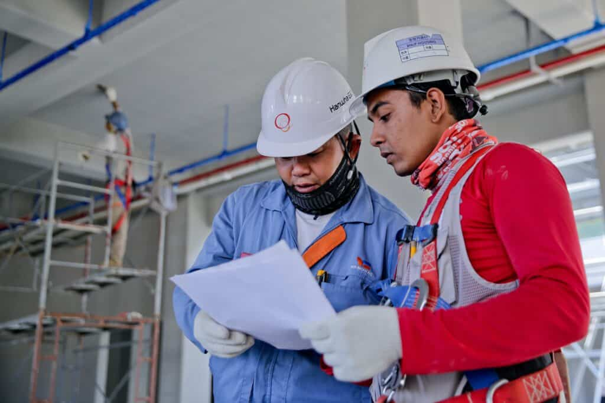

Inside a Data Center
A visual guide to understanding, designing, and speaking the language of data centers. Free 9-page preview, no strings attached.
Get the free previewBuilding Information Modeling (BIM) is a digital representation of the physical and functional characteristics of a building or infrastructure. MEP stands for mechanical, electrical, and plumbing, which are the three main systems that make up the infrastructure of a building. BIM for MEP refers to the use of BIM technology and processes to design, construct, and manage these systems in a building.
The use of BIM for MEP has several benefits, including increased efficiency, improved coordination, and reduced errors. BIM allows MEP professionals to create 3D models of their systems and collaborate with other disciplines in the design process. It also helps with scheduling, estimating, and construction. As well as with the operation and maintenance of the systems after the building is completed.
Overall, BIM for MEP is an important tool for improving the design, construction, and management of mechanical, electrical, and plumbing systems in buildings. It helps to increase efficiency, reduce errors, and improve collaboration, making it an increasingly popular choice in the construction industry.
Challenges of BIM for MEP
While BIM for MEP offers many benefits, it also presents some challenges. Some of the main challenges of using BIM for MEP include:
- Cost: BIM requires the use of specialized software and hardware, which can be expensive, particularly if you need to purchase multiple licenses or specialized equipment.
- Learning curve: BIM requires a new way of working and thinking. So it can have a steep learning curve for those who are not familiar with it. This can require significant time and resources to train team members and get them up to speed.
- Implementation time: BIM requires careful planning and coordination to implement successfully, which can take time and resources. This can be especially challenging for organizations that are new to BIM or are transitioning from traditional design processes.
- Data management: BIM generates a large amount of data, which can be difficult to manage and maintain. This requires a robust data management system and processes to ensure that the data is accurate and up-to-date.
Overall, while BIM for MEP offers many benefits, it also presents some challenges that organizations need to consider when deciding whether to implement BIM on their projects. These challenges include the cost of implementing BIM, the learning curve for new users. Also the time and resources required for implementation.
BIM for MEP: Case Study
One case study of the use of Building Information Modeling (BIM) for MEP (mechanical, electrical, and plumbing) is the construction of the Shanghai Tower in China. The Shanghai Tower is a supertall skyscraper that stands over 2,000 feet tall and is one of the tallest buildings in the world.
The construction of the Shanghai Tower was a complex project that required the coordination of many different disciplines, including MEP. To ensure that the MEP systems were designed and constructed accurately and efficiently, the project team used BIM technology and processes.
Using BIM, the MEP team was able to create a digital representation of the building’s systems, which allowed them to identify and resolve potential conflicts and issues early in the design process. This helped to save time and resources during construction, as it reduced the need for costly rework and redesign.
In addition, BIM allowed the MEP team to optimize the design of the systems, resulting in improved energy efficiency and reduced energy costs for the building. It also helped with the operation and maintenance of the systems after the building was completed, as the team was able to access accurate and up-to-date information about the systems in real-time.
Overall, the use of BIM for MEP on the Shanghai Tower project helped to improve coordination, reduce errors, and optimize the design and operation of the building’s systems. It played a crucial role in the successful completion of the project.
Facts and Metrics
Here are some data, metrics, and statistics related to the use of BIM for MEP:
- According to a survey conducted by the Construction Industry Institute, the use of BIM for MEP can result in cost savings of up to 10% on a construction project.
- A study published in the Journal of Management in Engineering found that the use of BIM for MEP can reduce the number of design errors by up to 80%.
- A case study of the construction of the Shanghai Tower in China found that the use of BIM for MEP helped to improve coordination and reduce errors, leading to cost savings of over $10 million on the project.
- A survey conducted by the American Society of Heating, Refrigerating, and Air-Conditioning Engineers (ASHRAE) found that the use of BIM for MEP can result in increased productivity and improved communication among team members.
- A case study of the construction of the One World Trade Center in New York City found that the use of BIM for MEP helped to improve coordination and reduce errors, leading to cost savings of over $15 million on the project.
These data, metrics, and statistics demonstrate the benefits of using BIM for MEP in the construction industry. BIM can help to improve coordination, reduce errors, and optimize the design and operation of MEP systems, leading to cost savings and increased productivity.
BIM for MEP: Cost of Implementation
The cost of implementing Building Information Modeling (BIM) in MEP (mechanical, electrical, and plumbing) projects can vary widely depending on a number of factors, including the size and complexity of the project, the level of BIM maturity of the organization, and the resources and personnel required to implement BIM.

Some of the main costs associated with BIM implementation in MEP projects include:
- Software and hardware costs: BIM software and hardware can be expensive, particularly if you need to purchase multiple licenses or specialized equipment.
- Training and professional development costs: BIM requires a new way of working and thinking, so it is important to invest in training and professional development for your team. This can involve costs for in-person training, online courses, or hiring a consultant.
- Data conversion costs: If you are transitioning from a traditional design process to BIM, you may need to convert your existing data into a BIM-compatible format. This can involve significant costs, depending on the amount and complexity of the data.
- Project management costs: BIM requires careful planning and coordination to ensure that it is implemented successfully. This can involve additional project management costs, such as hiring a BIM manager or coordinator.
Overall, the cost of implementing BIM in MEP projects can be significant, but it can also lead to significant benefits in terms of improved coordination, reduced errors, and increased efficiency. It is important to carefully consider the costs and benefits of BIM implementation and create a realistic budget and plan that takes into account all of the relevant factors.
BIM for MEP Vs CAD for MEP: Advantages & Disadvantages
Computer-Aided Design (CAD) and Building Information Modeling (BIM) are both technologies that are used in the design and construction of MEP (mechanical, electrical, and plumbing) systems in buildings. Here is a comparison of the advantages and disadvantages of CAD and BIM for MEP:
Advantages of CAD for MEP:
- Widely used: CAD has been around for a long time and is widely used in the construction industry, making it easy to find professionals who are familiar with the software.
- Flexible: CAD allows users to create detailed 2D and 3D drawings and make changes to them easily.
- Low cost: CAD software is often less expensive than BIM software, making it a more cost-effective option for some organizations.
Disadvantages of CAD for MEP:
- Limited information: CAD is primarily a drawing tool, so it does not store as much information about the MEP systems as BIM does.
- Limited collaboration: CAD does not have the same level of collaboration and coordination capabilities as BIM, so it can be more difficult to work with other disciplines on a project.
- Limited visualization: While CAD allows users to create detailed 2D and 3D drawings, it does not have the same visualization and rendering capabilities as BIM.
Advantages of BIM for MEP:
- Comprehensive information: BIM stores a wide range of information about the MEP systems, including materials, quantities, and properties. This can help with scheduling, estimating, and construction.
- Collaboration and coordination: BIM allows users to collaborate with other disciplines in real-time, making it easier to identify and resolve issues early in the design process.
- Visualization and analysis: BIM has advanced visualization and analysis capabilities, allowing users to see how the MEP systems will fit into the overall building design and identify potential issues.
Disadvantages of BIM for MEP:
- Cost: BIM software and hardware can be more expensive than CAD, particularly if you need to purchase multiple licenses or specialized equipment.
- Learning curve: BIM requires a new way of working and thinking, so it can have a steep learning curve for those who are not familiar with it.
- Implementation time: BIM requires careful planning and coordination to implement successfully, which can take time and resources.
Overall, both CAD and BIM have advantages and disadvantages for MEP projects. The best choice for your organization will depend on your specific needs, goals, and budget. It is important to carefully consider the costs and benefits of each option and choose the one that is best suited to your project.
Future of BIM for MEP
The future of BIM for MEP looks bright, with many new developments and innovations on the horizon.
Here are some key trends and developments that are likely to shape the future of BIM for MEP:
- Increasing use of BIM for facility management: BIM can be used to create a digital twin of a building, which allows for more efficient operation and maintenance of the MEP systems. This trend is likely to continue and expand in the future.
- Greater integration with other technologies: BIM is likely to become more closely integrated with other technologies, such as the Internet of Things (IoT), artificial intelligence (AI), and augmented reality (AR). This will allow for more advanced analysis and visualization of MEP systems and improve decision-making.
- Increased adoption in the construction industry: BIM is becoming more widely adopted in the construction industry, and this trend is likely to continue in the future. This will lead to more standardization and integration of BIM processes and technologies in the industry.
- Development of new software and hardware: The BIM market is constantly evolving, and new software and hardware products are likely to be developed in the future to meet the changing needs of the industry. These products may have new capabilities and features that further enhance the use of BIM for MEP.

Overall, the future of BIM for MEP looks bright, with many new developments and innovations on the horizon. BIM will continue to be an important tool for improving the design, construction, and management of MEP systems in buildings, and it will likely become more closely integrated with other technologies to further enhance its capabilities.